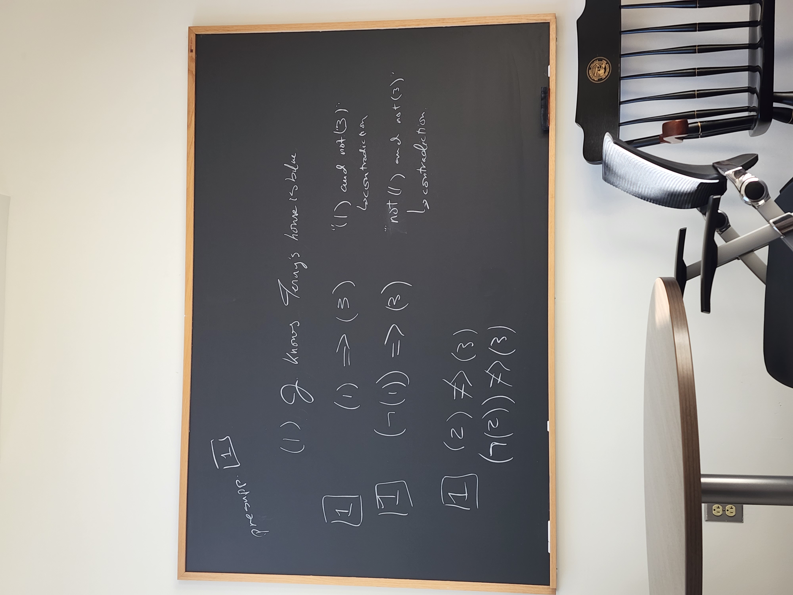
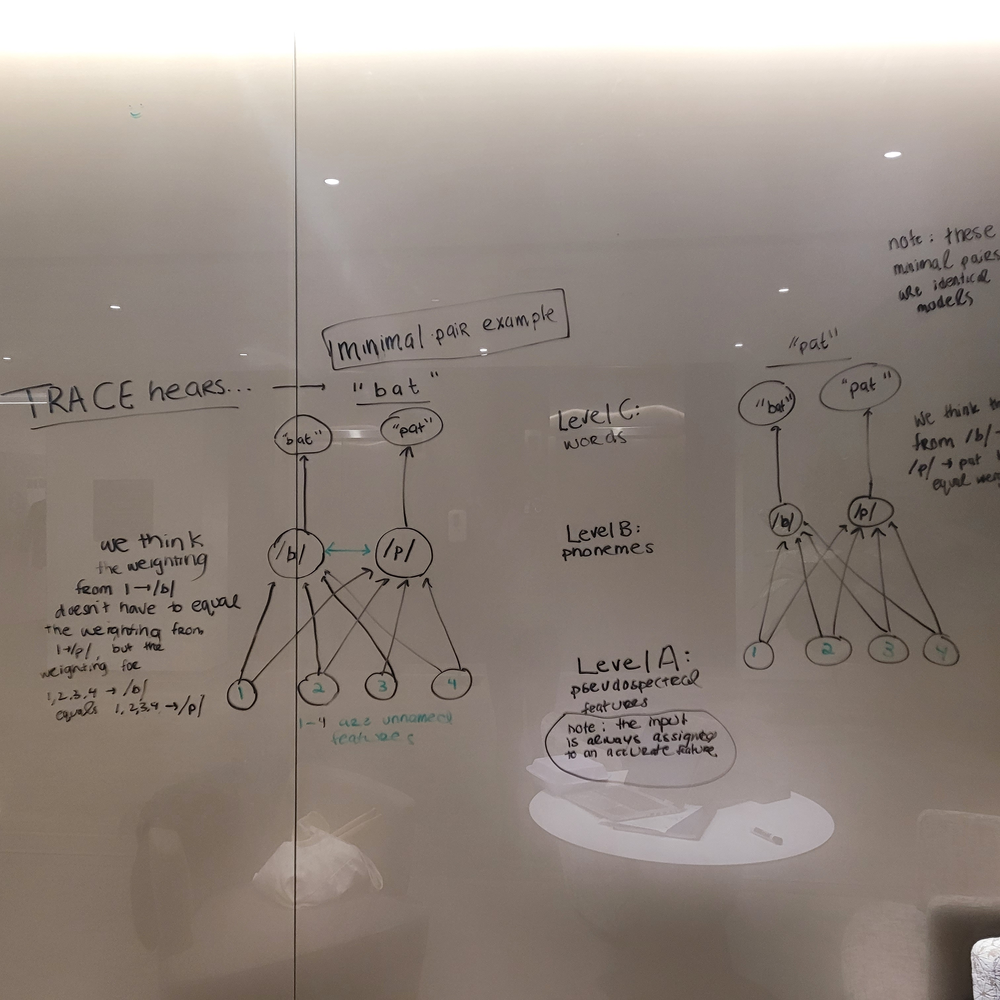

Aaliyah Bullen
Linguistics | Cognitive Science | Computer Science
Documenting my journey as an interdisciplinary student and researcher.
Snapshots across semesters.

Fall 2022: Reviewing presuppositions with
Professor O'Leary
before grading for her Semantics class.

Fall 2021: Taking notes on TRACE, my favorite speech perception model.
❮
❯